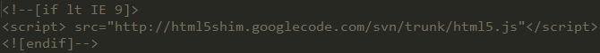

Web前端初级html+css面试题
1.对WEB标准以及W3C的理解与认识？
标签闭合、标签小写、不乱嵌套、提高搜索机器人搜索几率、使用外链css和js脚本、结构行为表现的分离、文件下载与页面速度更快、内容能被更多的用户所访问、内容能被更广泛的设备所访问、更少的代码和组件，容易维护、改版方便，不需要变动页面内容、提供打印版本而不需要复制内容、提高网站易用性.
2.XHTML和HTML有什么区别？
HTML是一种基本的WEB网页设计语言，XHTML是一个基于XML的置标语言
最主要的不同：
XHTML 元素必须被正确地嵌套。
XHTML 元素必须被关闭。
标签名必须用小写字母。
XHTML 文档必须拥有根元素。
3.Doctype? 严格模式与混杂模式-如何触发这两种模式，区分它们有何意义?
用于声明文档使用那种规范(HTML/XHTML)一般为 严格 过度 基于框架的html文档加入XMl声明可触发
解析方式更改为IE5.5 拥有IE5.5的bug
4.行内元素有哪些?块级元素有哪些?CSS的盒模型?
块级元素：div,p,h1,h2,h3,h4,form,ul
行内元素: a,b,br,i,span,input,select
Css盒模型:内容,border,margin,padding
5.CSS引入的方式有哪些? link和@import的区别是?
内联-内嵌-外链-导入
区别 ：同时加载
前者无兼容性，后者CSS2.1以下浏览器不支持
link支持使用javascript改变样式，后者不可
6.CSS选择符有哪些?哪些属性可以继承?优先级算法如何计算?内联和important哪个优先级高?
标签选择符-类选择符-id选择符
继承不如指定 Id>class>标签选择
后者优先级高
7.前端页面有哪三层构成，分别是什么?作用是什么?
结构层：HTML
表示层：CSS
行为层：javaScript
8.CSS的基本语句构成是?
选择器{属性1:值1;属性2:值2;……}
9.你做的页面在哪些流览器测试过?这些浏览器的内核分别是什么?
Ie(Ie内核)
火狐(Gecko)
谷歌(webkit)
opear(Presto)
10.写出几种IE6 BUG的解决方法
1.双边距BUG float引起的 使用display
2.3像素问题 使用float引起的 使用dislpay:inline -3px
3.超链接hover 点击后失效 使用正确的书写顺序 link visited hover active
4.Ie z-index问题 给父级添加position:relative
5.Png 透明 使用js代码 改
6.Min-height 最小高度 !Important 解决’
7.select 在ie6下遮盖 使用iframe嵌套
8.为什么没有办法定义1px左右的宽度容器(IE6默认的行高造成的，使用over:hidden,zoom:0.08 line-height:1px)
9.ie 6 不支持!important
11.img标签上title与alt属性的区别是什么?
Alt 当图片不显示是 用文字代表。
Title 为该属性提供信息
12.描述css reset的作用和用途?
Reset重置浏览器的css默认属性 浏览器的品种不同，样式不同，然后重置，让他们统一
13.解释css sprites，如何使用?
Css 精灵 把一堆小的图片整合到一张大的图片上，减轻服务器对图片的请求数量
14.浏览器标准模式和怪异模式之间的区别是什么?
盒子模型 渲染模式的不同
使用 window.top.document.compatMode 可显示为什么模式
15.你如何对网站的文件和资源进行优化?期待的解决方案包括：
文件合并
文件最小化/文件压缩
使用CDN托管
缓存的使用
16.什么是语义化的HTML?
直观的认识标签 对于搜索引擎的抓取有好处
17.清除浮动的几种方式，各自的优缺点
1.使用空标签清除浮动 clear:both(理论上能清楚任何标签，增加无意义的标签)
2.使用overflow:auto(空标签元素清除浮动而不得不增加无意代码的弊端,使用zoom:1用于兼容IE)
3.是用afert伪元素清除浮动(用于非IE浏览器)
18.css hack
_marging \\IE 6
+margin \\IE 7
Marging:0 auto \9 所有Ie
Margin \0 \\IE 8
19.什么是盒子模型？
在网页中，一个元素占有空间的大小由几个部分构成，其中包括元素的内容（content），元素的内边距（padding），元素的边框（border），元素的外边距（margin）四个部分。这四个部分占有的空间中，有的部分可以显示相应的内容，而有的部分只用来分隔相邻的区域或区域。4个部分一起构成了css中元素的盒模型。
20.CSS3有哪些新特性？
1. CSS3实现圆角（border-radius），阴影（box-shadow）
2. 对文字加特效（text-shadow、），线性渐变（gradient），旋转（transform）
3.transform:rotate(9deg) scale(0.85,0.90) translate(0px,-30px) skew(-9deg,0deg);// 旋转,缩放,定位,倾斜
4. 增加了更多的CSS选择器 多背景 rgba
5. 在CSS3中唯一引入的伪元素是 ::selection.
6. 媒体查询，多栏布局
7. border-image
21.html5有哪些新特性、移除了那些元素？如何处理HTML5新标签的浏览器兼容问题？如何区分 HTML 和 HTML5?
新特性：
1. 拖拽释放(Drag and drop) API
2. 语义化更好的内容标签（header,nav,footer,aside,article,section）
3. 音频、视频API(audio,video)
4. 画布(Canvas) API
5. 地理(Geolocation) API
6. 本地离线存储 localStorage 长期存储数据，浏览器关闭后数据不丢失
7. sessionStorage 的数据在浏览器关闭后自动删除
8. 表单控件，calendar、date、time、email、url、search
9. 新的技术webworker, websocket, Geolocation
移除的元素：
1. 纯表现的元素：basefont，big，center，font, s，strike，tt，u；
2. 对可用性产生负面影响的元素：frame，frameset，noframes；
支持HTML5新标签：
1. IE8/IE7/IE6支持通过 document.createElement 方法产生的标签，可以利用这一特性让这些浏览器支持 HTML5
新标签，浏览器支持新标签后，还需要添加标签默认的样式（当然最好的方式是直接使用成熟的框架、使用最多的是html5shim框架）：

如何区分：
DOCTYPE声明新增的结构元素、功能元素
22.本地存储（Local Storage ）和cookies（储存在用户本地终端上的数据）之间的区别是什么?
Cookies:服务器和客户端都可以访问；大小只有4KB左右；有有效期，过期后将会删除
本地存储：只有本地浏览器端可访问数据，服务器不能访问本地存储直到故意通过POST或者GET的通道发送到服务器；每个域5MB；没有过期数据，它将保留知道用户从浏览器清除或者使用Javascript代码移除
23.如何实现浏览器内多个标签页之间的通信?
调用 localstorge、cookies 等本地存储方式
24.什么是响应式设计？
它是关于网页制作的过程中让不同的设备有不同的尺寸和不同的功能。响应式设计是让所有的人能在这些设备上让网站运行正常
25.你如何对网站的文件和资源进行优化？
文件合并
文件最小化/文件压缩
使用CDN托管
缓存的使用
26.新的 HTML5 文档类型和字符集是？
Canvas 元素用于在网页上绘制图形，该元素标签强大之处在于可以直接在 HTML 上进行图形操作。
27.CSS3新增伪类有那些？
p:first-of-type 选择属于其父元素的首个 < p > 元素的每个 < p > 元素。
p:last-of-type 选择属于其父元素的最后 < p > 元素的每个 < p > 元素。
p:only-of-type 选择属于其父元素唯一的 < p 元素的每个 < p > 元素。
p:only-child 选择属于其父元素的唯一子元素的每个 < p > 元素。
p:nth-child(2) 选择属于其父元素的第二个子元素的每个 < p > 元素。
:enabled、:disabled 控制表单控件的禁用状态。
:checked，单选框或复选框被选中。